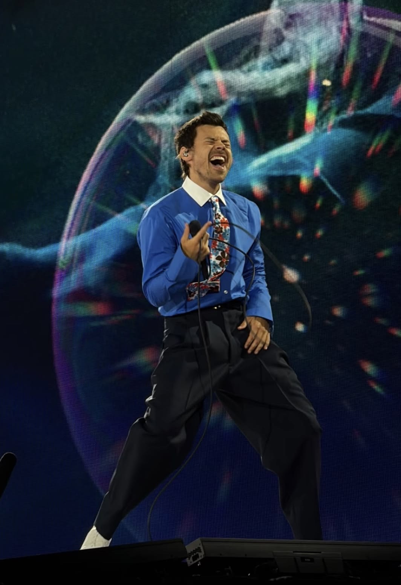
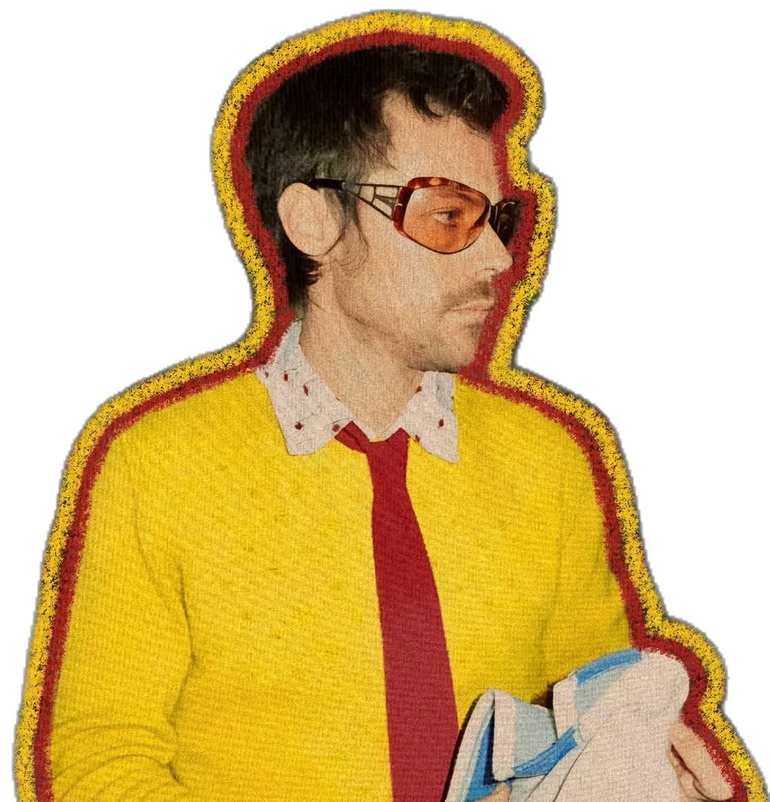
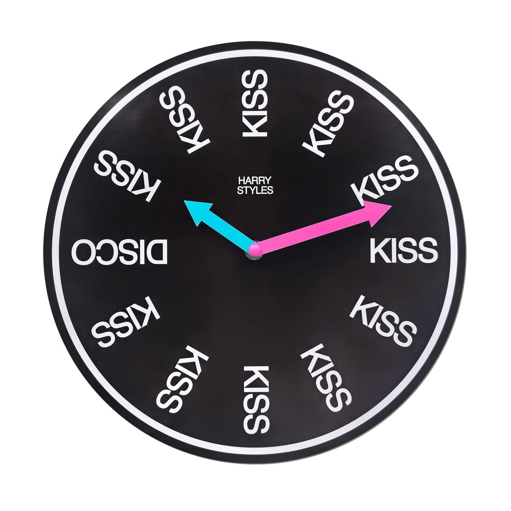

El marketing detrás de una comunidad que no se desaparece
HARRY STYLES
¿Cómo consigues que millones de personas sigan esperando por ti, incluso cuando llevas años sin salir de gira?
Harry Styles y el poder de construir una comunidad que va mucho más allá de la música.
@byensitamkt
El fenómeno
Tres años sin una gira.
Y la emoción seguía intacta. ¿Cómo?
Después de terminar Love On Tour en julio de 2023, Harry Styles pasó un largo periodo sin volver a los escenarios.
Pero sus fans no dejaron de hablar de él, compartir recuerdos, crear contenido y mantener viva la conexión con otros seguidores.
Y aquí hay algo interesante: la relación con una marca no tiene que terminar cuando deja de ofrecer algo nuevo.
Cuando construyes una comunidad, la conexión puede seguir existiendo incluso cuando no hay un producto nuevo que consumir.
@byensitamkt
El secreto no era solamente su música
Harry no vende únicamente canciones. También ofrece un lugar al que pertenecer.
Piensa en todo lo que sucede alrededor de su música:
Personas que viajan juntas para verlo,
amistades que nacen en sus conciertos,
outfits inspirados en sus diferentes eras,
pulseras que intercambian
y recuerdos que comparten en redes sociales.
outfits de cada era
La música es el punto de partida, pero la comunidad crea algo mucho más grande.
En marketing, esto se relaciona con el sentido de pertenencia: cuando las personas sienten que forman parte de algo y no solamente que están consumiendo un producto.
@byensitamkt
COMMUNITY MARKETING
Cuando tus propios consumidores se convierten en quienes mantienen viva tu marca.
Esto es lo interesante de la comunidad de Harry: sus fans no esperan a que él publique algo para participar.
Crean teorías, comparten fotografías, hacen videos, organizan encuentros y generan conversaciones entre ellos.
¿El resultado? La comunidad produce contenido, mantiene el interés y atrae a nuevas personas de manera orgánica.
A esto lo conocemos como Community Marketing: construir relaciones entre una marca y sus consumidores, pero también facilitar que esos consumidores conecten entre sí.
@byensitamkt
No es solamente ir a un concierto. Es sentir que formas parte de algo.
El concepto Together, Together pone sobre la mesa una idea muy poderosa: la música se vive de manera diferente cuando la compartes con otras personas.
No vas únicamente a escuchar tus canciones favoritas. Vas a cantar con miles de personas que sienten lo mismo, reencontrarte con amigos, conocer gente y crear recuerdos.
Desde el marketing, esto tiene mucho que ver con el experiential marketing: crear experiencias que las personas puedan vivir, recordar y asociar con una marca.
Porque hay experiencias que no solo se consumen: se quedan contigo.
@byensitamkt
Cuando una marca entiende la emoción
American Express también entendió que lo importante no era solamente conseguir una entrada.

Con su campaña We Belong Together, Together, American Express llevó el concepto de conexión a una experiencia real: algunos fans tuvieron la oportunidad de asistir a conciertos acompañados de alguien especial.
¿La estrategia detrás?
No comunicar únicamente un beneficio o una promoción, sino vincular la marca con algo que las personas valoran emocionalmente: compartir un momento importante con alguien.
MARKETING EMOCIONAL
Esto es marketing emocional: conectar una marca con sentimientos, recuerdos y experiencias que tienen significado para las personas.
@byensitamkt
¿Y qué tiene que ver todo esto con tu negocio?
No necesitas tener millones de fans para construir una comunidad.
Una cafetería puede crear un espacio donde sus clientes se conozcan.
Una marca de ropa puede hacer que sus consumidores compartan sus outfits.
Un gimnasio puede convertir sus clases en experiencias donde las personas se acompañen y motiven.

La clave está en dejar de pensar únicamente en qué vas a vender y comenzar a pensar en qué puedes hacer sentir, compartir y vivir a tus consumidores.
@byensitamkt

El aprendizaje
La fidelidad no se construye solamente haciendo que alguien vuelva a comprar.
Se construye cuando una persona encuentra razones para quedarse, hablar de ti, recomendarte y sentirse parte de lo que representas.
Harry Styles nos deja una gran lección de marketing:
Las marcas más fuertes no son necesariamente las que más venden. Son las que consiguen crear conexiones que las personas quieren mantener.
Y tú, ¿qué estás haciendo para que tus clientes quieran formar parte de tu marca?